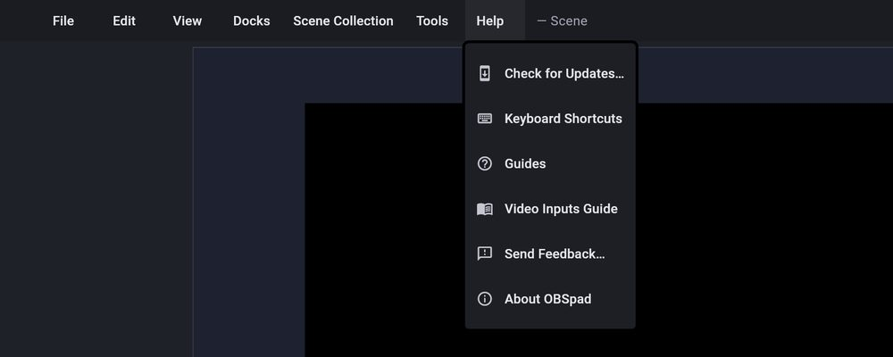
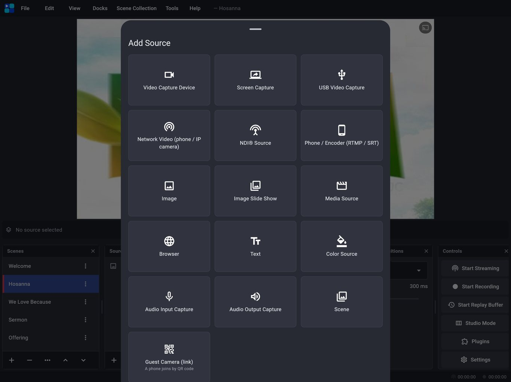
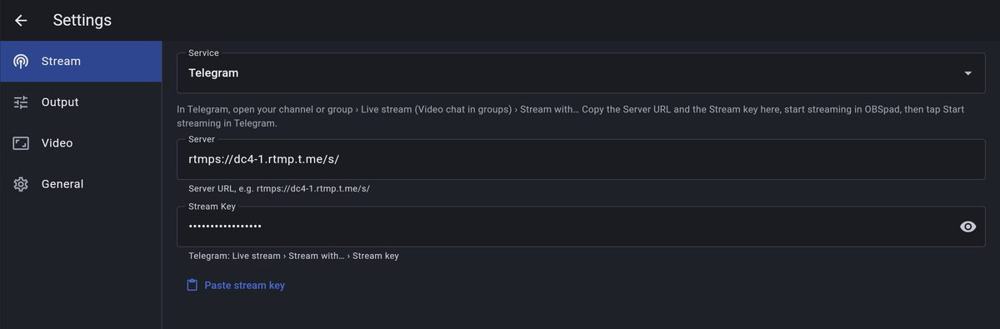
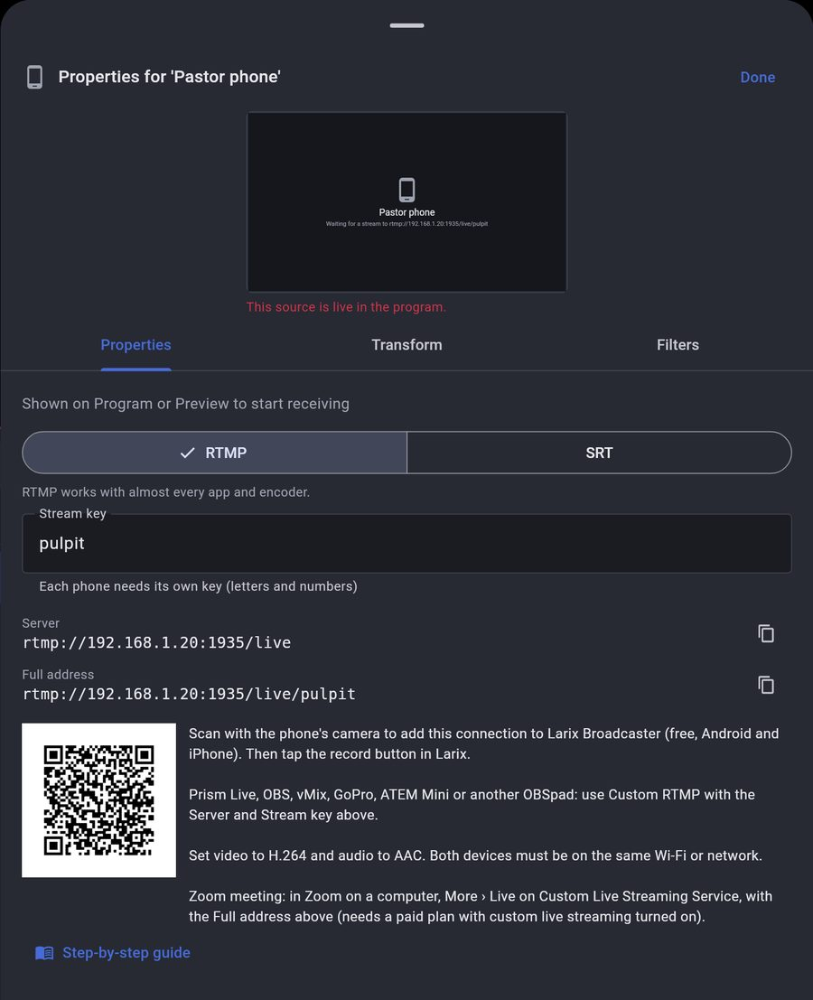
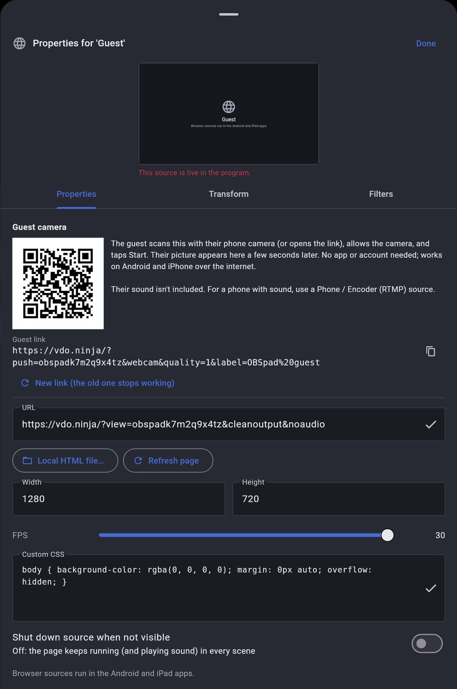
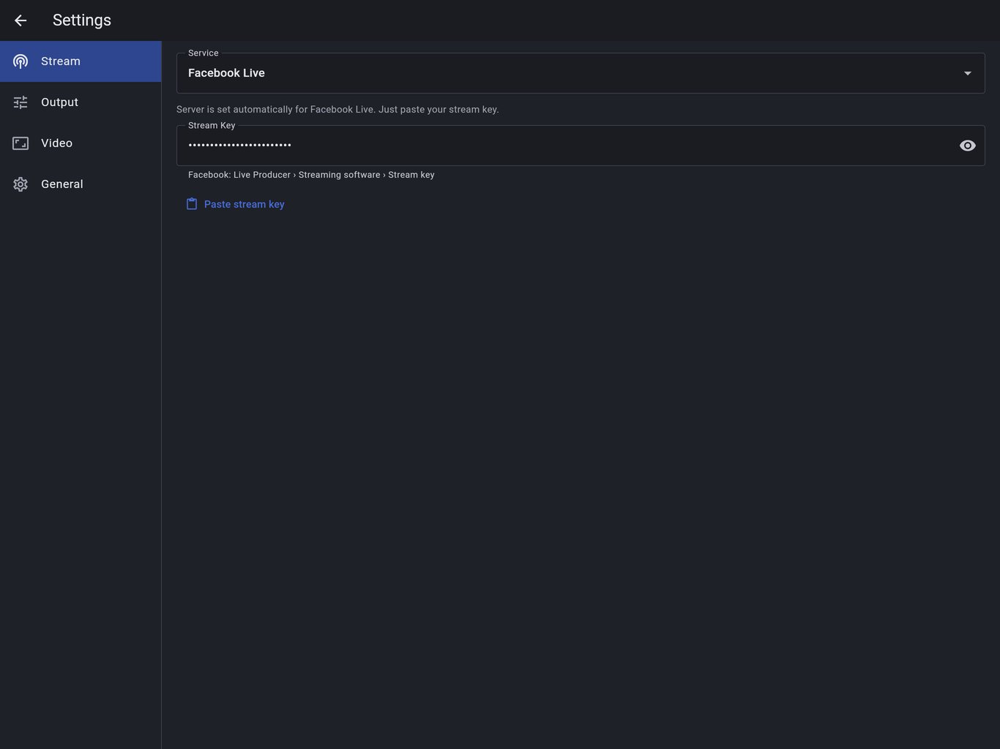

Start here
Every guide works the same on Android tablets and iPad unless noted. Inside the app, Help opens these guides and the Video Inputs Guide.
Find help in the appHelp menu
- Tap Help in the menu bar at the top.
- Guides opens this page; Video Inputs Guide opens the step-by-step guide for cameras, phones and other inputs.
- Send Feedback… reports a problem or suggests a feature.

Add a sourceSources dock › +
- In the Sources dock tap +.
- Pick what to add: camera, capture card, phone, NDI, video, picture, text, web page and more.
- Set it up in Properties (with a live preview) and tap Add. Every input is explained in the Video Inputs Guide.

Go live: Facebook, YouTube, Telegram, Instagram and WhatsApp
OBSpad streams to any service that gives you a server and a stream key. Set it in Settings › Stream.
Facebook and YouTubeOnly the stream key
- Facebook: Live Producer › Streaming software › copy the Stream key. YouTube: YouTube Studio › Go live › Stream › copy the Stream key.
- In OBSpad open Settings › Stream, choose Facebook Live or YouTube (RTMPS) and paste the key. The server is filled in for you.
- Tap Start Streaming. On Facebook, click Go live once the preview appears.
Telegram channels and groupsLive stream with other apps
- In Telegram open your channel or group (you must be an admin) and start a Live stream (in groups: Video chat). Choose Stream with… (“stream with other apps”) to see the Server URL and Stream key.
- In OBSpad: Settings › Stream › Service: Telegram. Paste the Server URL (like rtmps://dc4-1.rtmp.t.me/s/) and the Stream key.
- Tap Start Streaming in OBSpad, then Start streaming in Telegram. Members watch it in the channel or group.
- Keep the key private: anyone who has it can stream to your channel. Use Revoke in Telegram for a new one.

Instagram LiveLive Producer on instagram.com
- On a computer go to instagram.com (on a phone or tablet: the browser in desktop mode) › Create › Live video. Give it a title and choose the audience. Instagram shows a Stream URL and Stream key.
- In OBSpad: Settings › Stream › Service: Instagram Live. Paste both.
- Tap Start Streaming in OBSpad. When the preview appears on instagram.com, click Go live.
- The key is new for every live: paste the new one each time.
Instagram is a vertical app; OBSpad sends a 16:9 picture, which shows with bars or cropped at the sides on phones. Keep faces and text in the middle. Instagram may ask for a professional (creator or business) account to use Live Producer. Recommended: 1280x720, 30 FPS, 2500–4000 kbps.
WhatsAppNo live streaming yet: two ways around it
WhatsApp has no live streaming and no stream key, so no app can stream into it directly. These work today:
- Share a live link (many viewers): go live on YouTube, Facebook or Telegram with OBSpad and post the link in your WhatsApp groups, Channel or Status. People tap it to watch.
- Put OBSpad into a WhatsApp video call (up to 32 people): connect the tablet’s HDMI out (USB-C to HDMI) to a USB HDMI capture card plugged into a laptop. In the WhatsApp app on Windows or Mac, start a video call and choose the capture card as the camera and its sound as the microphone. Callers see your Program, overlays and all.
The same capture-card trick makes OBSpad your camera in Zoom, Google Meet, Teams or any video-call app on the laptop.
Telegram, YouTube and others at onceMultistream
- OBSpad sends one stream at a time.
- To reach several platforms, stream to a restream service (Restream, OneStream, Castr) with Custom and its server and key, and add your Telegram, YouTube, Facebook and Instagram destinations there.
Screens, projectors and Multiview
Show the program on a TV or monitorCable, USB-C or docking station
- Plug the monitor into the tablet with a USB-C to HDMI adapter, or into your docking station.
- OBSpad shows the Program on it full screen. To choose, long-press Program, or use View › Fullscreen Projector or View › Multiview.
- Nothing shows up? Open Tools › Docking Station & Screen: it lists what the tablet detects and why a screen may be missing.
Use the MultiviewPreview, Program and up to 16 scenes
- Open View › Multiview (Fullscreen) and pick This tablet, or a connected screen or TV.
- On the tablet, tap a scene to put it in Preview, or double-tap it (or hold it for a second) to send it straight to Program with your transition.
- Choose 4, 6, 8 or 16 scenes with the layout button at the top. Close it with the × button or the back gesture. Program shows a red border, Preview a green one.

Multiview touch controlsTap, double-tap and hold
- Tap a scene
- Puts it in Preview (green border). With Studio Mode off, it goes live straight away.
- Double-tap a scene
- Sends it to Program (red border) with your transition. The scene that was live moves to Preview.
- Hold a scene for 1 second
- The same as a double-tap: the scene goes live. A shorter hold does nothing.
- Layout button (top right)
- Shows 4, 6, 8 or 16 scenes below Preview and Program.
- Back to OBSpad, ×, back gesture or Esc
- Closes the Multiview and returns to the studio.
Cast to a smart TVSmart View, Miracast or AirPlay
- Long-press Program and tap Cast to a wireless screen….
- Android: pick your TV in the Cast or Smart View screen that opens. iPad: open Control Center, tap Screen Mirroring and pick your Apple TV.
- When it connects, the TV shows the Program while you keep working on the tablet. Chromecast mirrors the whole tablet instead.
Cameras, phones and guests
The Video Inputs Guide covers every input in detail, with troubleshooting.
Use a phone as a camera, with its soundLarix Broadcaster over Wi-Fi
- In OBSpad, Add Source › Phone / Encoder (RTMP / SRT). Its properties show this tablet’s address, a stream key and a QR code.
- On the phone, install Larix Broadcaster (free) and scan the QR code with the phone’s camera to add the connection, or type the Server and Stream key in.
- Tap record in Larix. Picture and sound appear in OBSpad. Prism Live, OBS, GoPro or another OBSpad work the same way with Custom RTMP. Use H.264 video and AAC audio.
- Weak Wi-Fi or a phone on mobile data? Switch the source to SRT: it re-sends lost packets so the picture doesn’t break up. SRT setup

Phone over weak Wi-Fi or the internetSRT
- Open the Phone / Encoder source and switch it to SRT.
- Scan the QR code with Larix, or enter the SRT address in OBS, vMix or a hardware encoder (caller mode).
- SRT sends lost pieces again, so the picture stays clean. Over the internet, forward UDP port 9000 or use a VPN like Tailscale. More

Invite a guest camera by QR codeNo app for the guest
- Add Source › Guest Camera (link).
- The guest scans the QR code in its properties with their phone (or opens the link), allows the camera and taps Start.
- Their picture appears in OBSpad a few seconds later, over the internet. Their sound isn’t included; for a phone with sound, use Phone / Encoder (RTMP / SRT).

Bring in an NDI® sourcevMix, OBS, PTZ cameras
- Add Source › NDI® Source. OBSpad lists the NDI senders on your network.
- Pick one. Its picture and sound arrive over the network; turn on Low bandwidth on busy Wi-Fi.
- Needs the NDI runtime in the build (the same as NDI output); see ndi.video.
Use an old phone or an IP cameraNetwork Video
- Sources + › Network Video.
- Choose DroidCam or IP Webcam and type the phone’s IP address, or paste an MJPEG or HLS link from an IP camera.
- Video only: for sound, use a Phone / Encoder source.

Sound
Fix sound that’s out of syncAudio sync offset
- Phone and network cameras often show the picture later than the mic hears it.
- In the Audio Mixer, tap the timer button on the mic (or video, NDI or phone source).
- Clap once on camera, then raise the offset until the clap sound and picture match. Up to 2 seconds.
Use a Bluetooth or wireless micHeadsets and USB receivers
- Wireless kits with a USB receiver (DJI Mic, Rode Wireless GO) work as USB sound cards, in full quality.
- Bluetooth headsets: pair them, then pick them in the mic’s input menu in the Audio Mixer.
- Bluetooth mics send call-quality sound with a short delay: fine for a backup, and the Audio sync offset can line them up.
Use two microphones on one USB interfaceEach input as its own mic
- Plug in the audio interface. OBSpad switches to it automatically.
- Add an Audio Input Capture source for each mic.
- In the Audio Mixer, set each mic to Input 1 (L) or Input 2 (R). Each gets its own fader, meter and filters.
Clean up your voiceNoise Suppression, Gate, Compressor
- In the Audio Mixer, tap the mic’s Mic adjustments button for one-tap noise suppression and levelling.
- For finer control, open the mic’s Filters and add Noise Suppression, Noise Gate, Compressor or Limiter.
- Watch the meter: speech should peak in the yellow, never in the red.
Play a video with its soundMedia Source and audio monitoring
- Add a Media Source and pick the video. Its sound goes into the stream and recording.
- Under Audio Monitoring, choose Stream + tablet to hear it on the tablet too.
- Use the play, pause and restart buttons in the bar under the canvas.
Add a video from Google Drive or DropboxFrom a link
- Share the file with “Anyone with the link” and copy the link.
- In a Media Source or Image’s properties, tap From a link… and paste it.
- OBSpad downloads it to the tablet, so it plays even without internet later. YouTube and Facebook links can’t be downloaded.
Production tools
Colour-grade with a LUTApply LUT filter
- Select a camera or video source and tap Filters in the bar under the canvas.
- Add Apply LUT and browse for a .cube file (or a LUT from a plugin).
- Lower Amount to blend the look with the original picture.
Save an instant replayReplay buffer
- Set how many seconds to keep in Settings › Output › Replay buffer.
- Tap Start Replay Buffer in the Controls dock.
- After a great moment, tap Save Replay. The last seconds are saved as a file.
Add a stream delayViewers see it seconds later
- Open Settings › Output and set Stream delay.
- Start streaming: viewers see everything that many seconds late, so you have time to cut away.
- Recordings aren’t delayed.
Stream or record in 2K2560×1440
- In Settings › Video, set the Output resolution to 2560x1440 (2K) at 30 FPS.
- In Settings › Output, use 9000–18000 kbps and a wired or strong Wi-Fi connection.
- YouTube accepts 1440p; Facebook Live and Twitch scale it down, so 1080p is better there.

Send video to vMix or OBS over NDI®Same network, no cables
- Open Tools › Plugins and turn on NDI Output.
- Give it a name. It appears as an NDI source in vMix, OBS (DistroAV) or NDI Studio Monitor on the same network.
- The NDI runtime has to be included in the build; see ndi.video.
Install an overlay or pluginFrom GitHub or a .zip
- Open Tools › Plugins › Get plugins.
- Paste a GitHub link (owner/repo works), or tap Install from .zip…. Repos without an OBSpad manifest are converted.
- Web overlays then appear in Add Source › From plugins, LUTs in Apply LUT, and docks on the Plugins screen. Desktop-only OBS plugins (.dll, C/C++, Lua) can’t run on a tablet.
Work faster with a keyboardShortcuts and undo
- Connect a Bluetooth or USB keyboard.
- See every shortcut in Help › Keyboard Shortcuts: switch scenes, transition, start and stop streaming and recording.
- Edit › Undo and Redo (Ctrl+Z / Ctrl+Y) take back changes to scenes and sources.